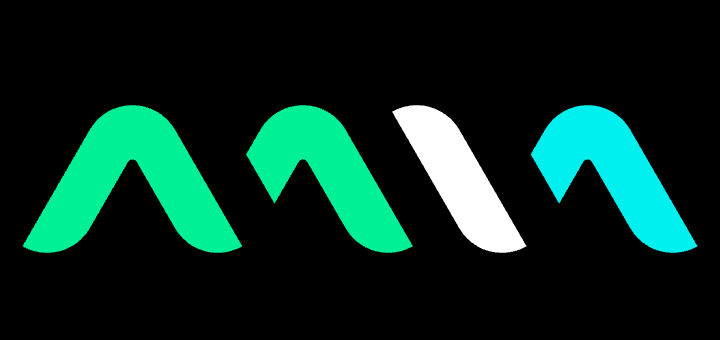

IEC 62304
Compliant-by-design
ISO 13485
FHIR · HL7
GAMP5

P4SAMD · Platform for Software as a Medical Device
SDLC · End-to-End
Mia-Care · Unlock the power of digital health
Rev. 2026 / 001
Value Flow
/
SaMD Lifecycle
Continuous · Compliant · Composable
A double helix of
Quality
&
Velocity
Mia-Care
Tweaks
DNA · SDLC
Rotation speed
—
Helix radius
—
Twist density
—
Nucleotide density
—
Base pairs
Visible
Hidden
Drift speed
—
Tilt
—